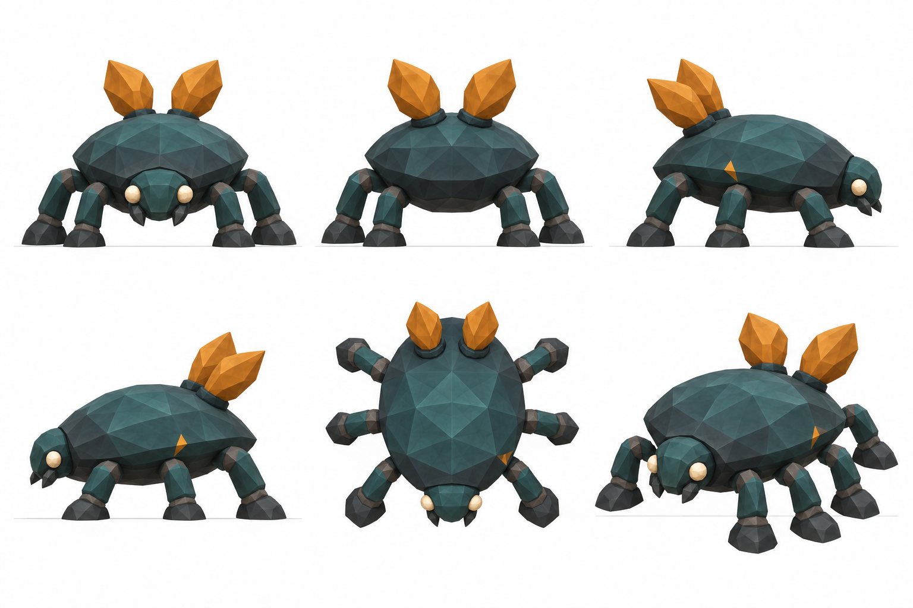
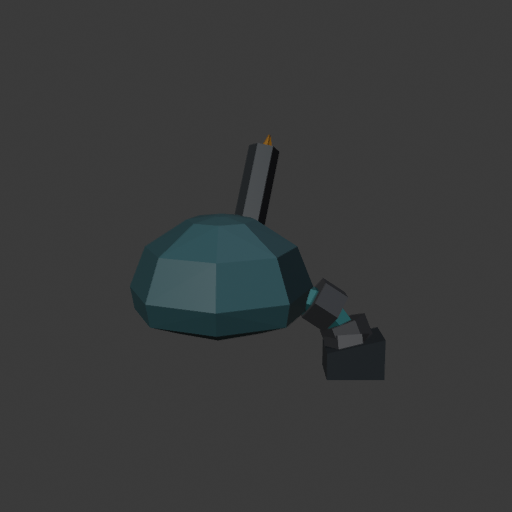
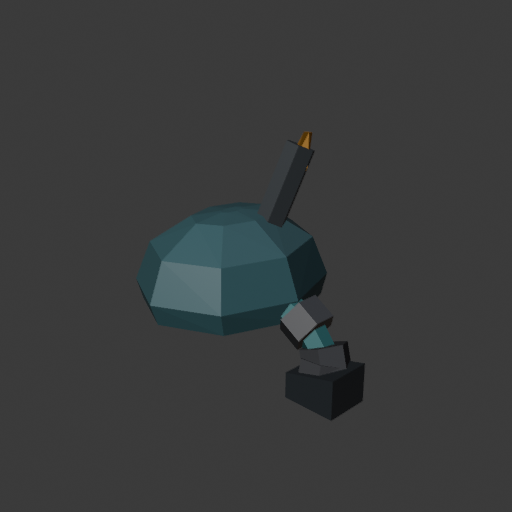
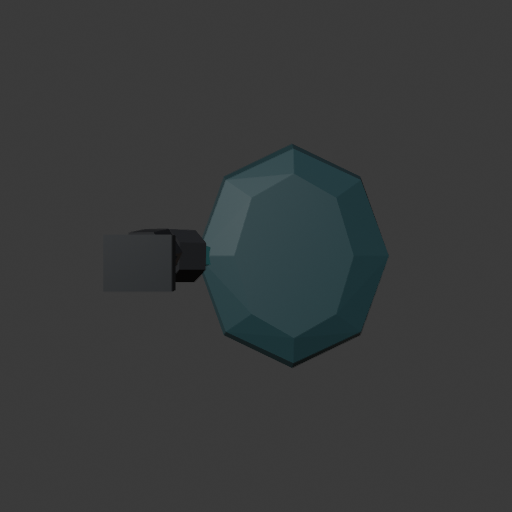

Rootbound dossier · Trailgloam
A small construction probe: one representative leg, one folded frond and their supporting body. This is not a full creature, animation or gameplay result.

Independent result: retain the closed bent-leg/cuff construction. Hold the frond and full candidate: the dark collar hides nearly all the amber blade. A full plan needs two broad exposed fronds and all six legs.



Ten individually closed solids, 264 triangles. Actual CPU geometry checks establish the root and collar overlap their convex body, adjacent link ends fit within cuffs, and all six lower cuff-cap vertices enter the hoof. Blender import parity and the observed views are recorded separately from those CPU contact measurements.
Independent visual verdict · Construction history and limits · Independent source review · CPU solid/contact proof · Actual render receipt · 96px · 48px
A successful local attachment test earns a separately planned six-leg build; it does not prove the complete silhouette, motion, rigging, resource cue or encounter.
{kind=link}
{kind=link}